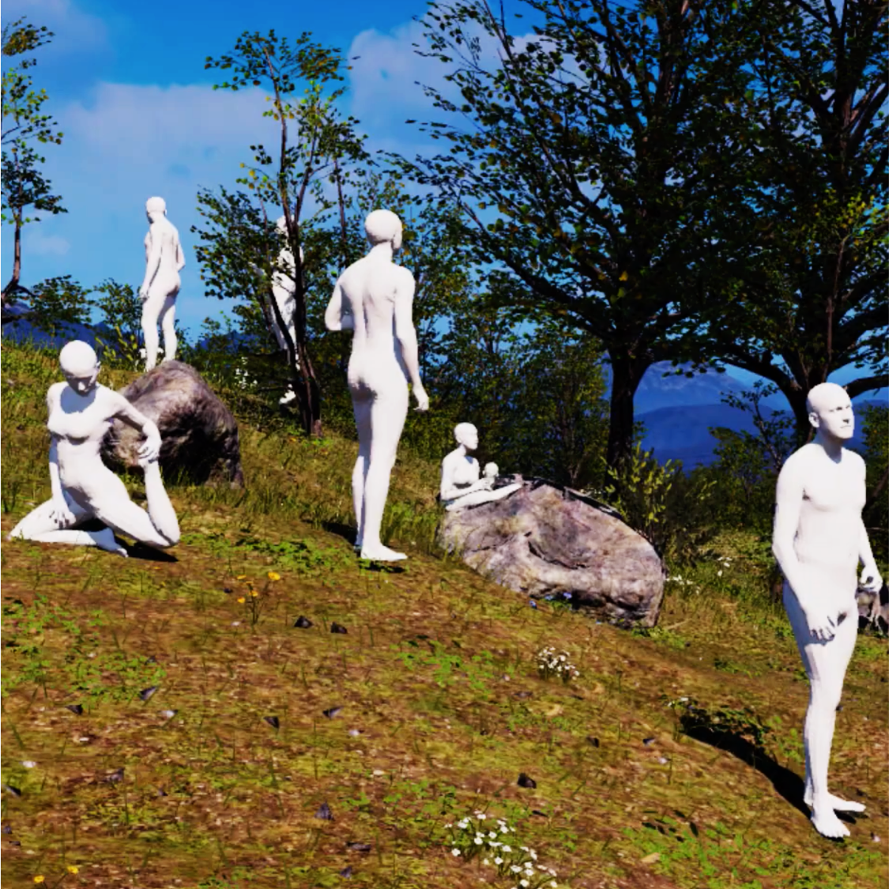
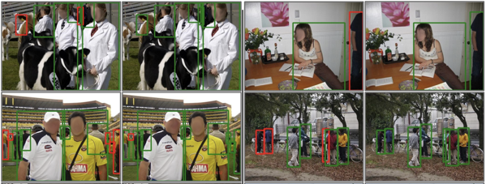
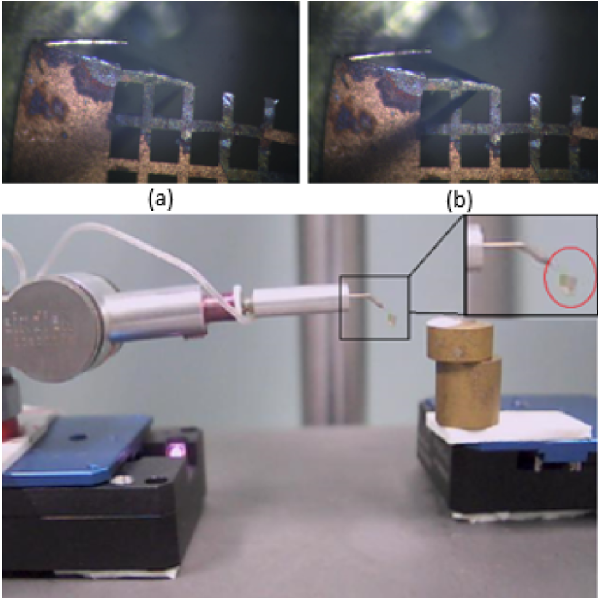
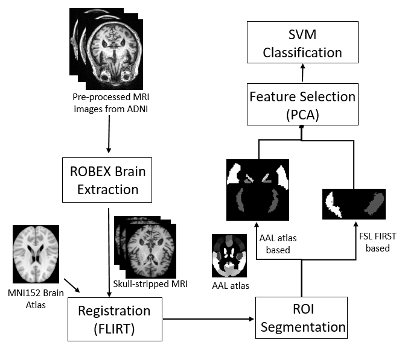
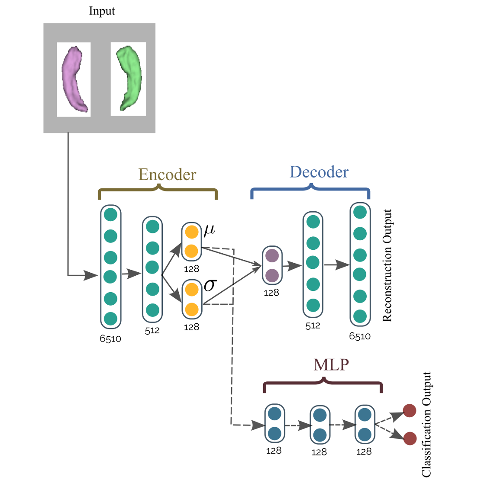
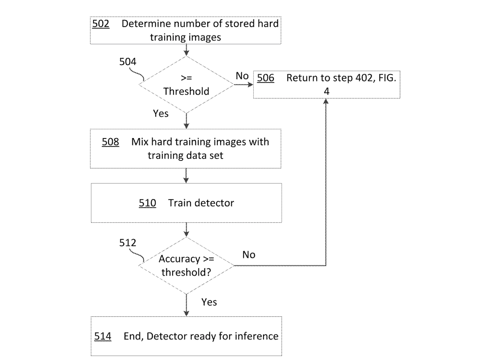
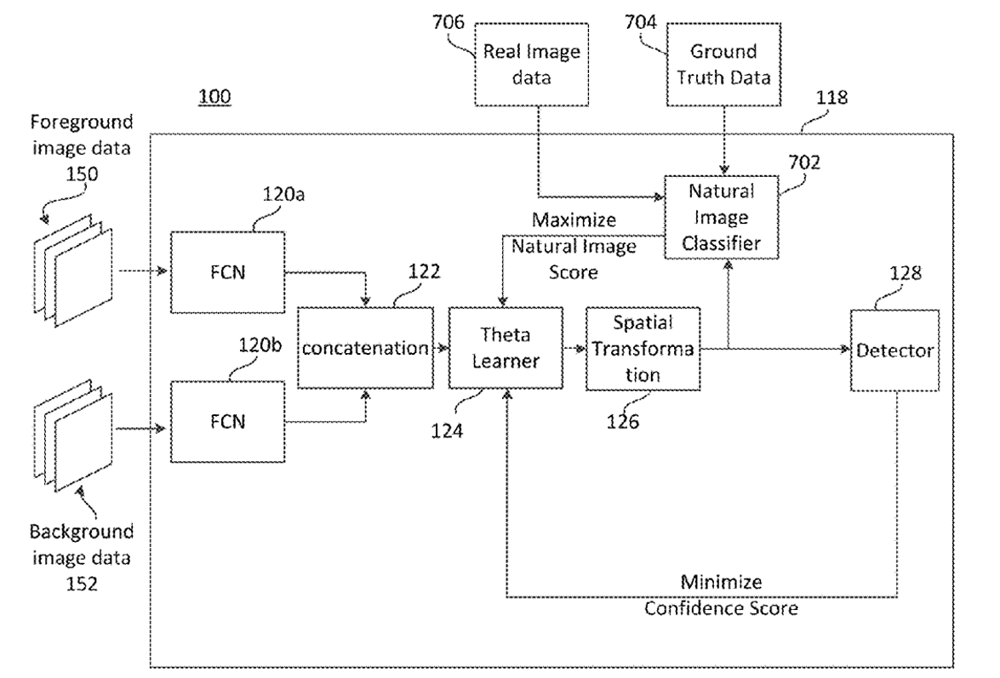

Shashank Tripathi
|
I am a PhD student (2021-) at the Max Planck Institute for Intelligent Systems where I am
advised by MPI Director Michael Black.
Earlier, I worked as an Applied Scientist at Amazon (2019-2021). I earned my Masters
(2017-2019) from the Robotics Institute, Carnegie Mellon University, working with Prof. Kris Kitani
At Amazon Lab126, I closely collaborated with Prof. James
Rehg, Dr. Amit
Agrawal and Dr.
Ambrish Tyagi. It has been my great fortune to have worked with excellent mentors and
advisors.
Email /
Google Scholar
/
GitHub /
LinkedIn /
Twitter /
CV
|
ResearchMy research lies at the intesection of machine-learning, computer vision and computer graphics. Specifically, I am interested in 3D modelling of human bodies with limited supervision. I am also working on understanding human motion in 3D. In the past, I have worked on synthetic data for applications like object detection and human pose estimation.Before diving into human body research, I dabbled in visual-servoing, medical-image analysis, pedestrian-detection and reinforcement learning. |
Publications |
|
|  |
paper |
abstract |
dataset |
video
While the accuracy of 3D human pose estimation from images has steadily improved on benchmark datasets, the best methods still fail in many real-world scenarios. This suggests that there is a domain gap between current datasets and common scenes containing people. To obtain ground-truth 3D pose, current datasets limit the complexity of clothing, environmental conditions, number of subjects, and occlusion. Moreover, current datasets evaluate sparse 3D joint locations corresponding to the major joints of the body, ignoring the hand pose and the face shape. To evaluate the current state-of-the-art methods on more challenging images, and to drive the field to address new problems, we introduce AGORA, a synthetic dataset with high realism and highly accurate ground truth. Here we use 4240 commercially-available, high-quality, textured human scans in diverse poses and natural clothing; this includes 257 scans of children. We create reference 3D poses and body shapes by fitting the SMPL-X body model (with face and hands) to the 3D scans, taking into account clothing. We create around 14K training and 3K test images by rendering between 5 and 15 people per image us- ing either image-based lighting or rendered 3D environments, taking care to make the images physically plausible and photoreal. In total, AGORA consists of 173K individual person crops. We evaluate existing state-of-the- art methods for 3D human pose estimation on this dataset. and find that most methods perform poorly on images of children. Hence, we extend the SMPL-X model to better capture the shape of children. Additionally, we fine- tune methods on AGORA and show improved performance on both AGORA and 3DPW, confirming the realism of the dataset. We provide all the registered 3D reference training data, rendered images, and a web-based evaluation site at https://agora.is.tue.mpg.de/. |

|
paper |
abstract |
videos
Recovering 3D human pose from 2D joints is a highly unconstrained problem. We propose a novel neural network architecture, PoseNet3D, that takes 2D joints as input and outputs 3D skeletons and SMPL pose parameters. By casting our learning approach in a Knowledge Distillation framework, we avoid using any 3D data such as paired 2D-3D data, unpaired 3D data, motion capture sequences or multi-view images during training. We first train a teacher network that outputs 3D skeletons, using only 2D poses for training. The teacher network distills its knowledge to a student network that predicts 3D pose in SMPL representation. Finally, both the teacher and the student networks are jointly fine tuned in an end-to-end manner using self-consistency and adversarial losses, improving the accuracy of the individual networks. Results on Human3.6M dataset for 3D human pose estimation demonstrate that our approach reduces the 3D joint prediction error by 18% or more compared to previous methods. Qualitative results show that the recovered 3D poses and meshes are natural, realistic, and flow smoothly over consecutive frames. |
|  |
paper |
abstract |
poster
We present a task-aware approach to synthetic data generation. Our framework employs a trainable synthesizer network that is optimized to produce meaningful training samples by assessing the strengths and weaknesses of a `target' network. The synthesizer and target networks are trained in an adversarial manner wherein each network is updated with a goal to outdo the other. Additionally, we ensure the synthesizer generates realistic data by pairing it with a discriminator trained on real-world images. Further, to make the target classifier invariant to blending artefacts, we introduce these artefacts to background regions of the training images so the target does not over-fit to them. We demonstrate the efficacy of our approach by applying it to different target networks including a classification network on AffNIST, and two object detection networks (SSD, Faster-RCNN) on different datasets. On the AffNIST benchmark, our approach is able to surpass the baseline results with just half the training examples. On the VOC person detection benchmark, we show improvements of up to 2.7% as a result of our data augmentation. Similarly on the GMU detection benchmark, we report a performance boost of 3.5% in mAP over the baseline method, outperforming the previous state of the art approaches by up to 7.5% on specific categories. |
|  |
paper |
abstract |
video
In this paper, authors present the development of a completely automated system to perform 3D micromanipulation and microassembly tasks. The microassembly workstation consists of a 3 degree-of-freedom (DOF) MM3A® micromanipulator arm attached to a microgripper, two 2 DOF PI® linear micromotion stages, one optical microscope coupled with a CCD image sensor, and two CMOS cameras for coarse vision. The whole control strategy is subdivided into sequential vision based routines: manipulator detection and coarse alignment, autofocus and fine alignment of microgripper, target object detection, and performing the required assembly tasks. A section comparing various objective functions useful in the autofocusing regime is included. The control system is built entirely in the image frame, eliminating the need for system calibration, hence improving speed of operation. A micromanipulation experiment performing pick- and-place of a micromesh is illustrated. This demonstrates a three-fold reduction in setup and run time for fundamental micromanipulation tasks, as compared to manual operation. Accuracy, repeatability and reliability of the programmed system is analyzed. |
|  |
paper |
abstract |
poster
Neurodegenerative pathologies, such as Alzheimer’s disease, are linked with morphological alterations and tissue variations in subcortical structures which can be assessed from medical imaging and biological data. In this work, we present an unsupervised framework for the classification of Alzheimer’s disease (AD) patients, stratifying patients into four diagnostic groups, namely: AD, early Mild Cognitive Impairment (MCI), late MCI and normal controls by combining shape and voxel-based features from 12 sub-cortical areas. An automated anatomical labeling using an atlas-based segmentation approach is proposed to extract multiple regions of interest known to be linked with AD progression. We take advantage of gray-matter voxel-based intensity variations and structural alterations extracted with a spherical harmonics framework to learn the discriminative features between multiple diagnostic classes. The proposed method is validated on 600 patients from the ADNI database by training binary SVM classifiers of dimensionality reduced features, using both linear and RBF kernels. Results show near state-of-the-art approaches in classification accuracy (>88%), especially for the more challenging discrimination tasks: AD vs. LMCI (76.81%), NC vs. EMCI (75.46%) and EMCI vs. LMCI (70.95%). By combining multimodality features, this pipeline demonstrates the potential by exploiting complementary features to improve cognitive assessment. |
|  |
paper |
abstract
Alzheimer’s disease (AD) and mild cognitive impairment (MCI) are the most prevalent neurodegenerative brain diseases in elderly population. Recent studies on medical imaging and biological data have shown morphological alterations of subcortical structures in patients with these pathologies. In this work, we take advantage of these structural deformations for classification purposes. First, triangulated surface meshes are extracted from segmented hippocampus structures in MRI and point-to-point correspondences are established among population of surfaces using a spectral matching method. Then, a deep learning variational auto-encoder is applied on the vertex coordinates of the mesh models to learn the low dimensional feature representation. A multi-layer perceptrons using softmax activation is trained simultaneously to classify Alzheimer’s patients from normal subjects. Experiments on ADNI dataset demonstrate the potential of the proposed method in classification of normal individuals from early MCI (EMCI), late MCI (LMCI), and AD subjects with classification rates outperforming standard SVM based approach. |
{kind=link}
{kind=link}
{kind=link}
{kind=link}
{kind=link}
Patents |
|  |
|
|  |
|
MiscellaneousSome other unpublished work: |
{kind=link}
{kind=link}
|
|